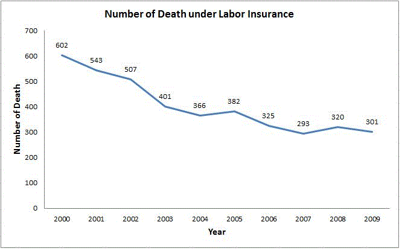
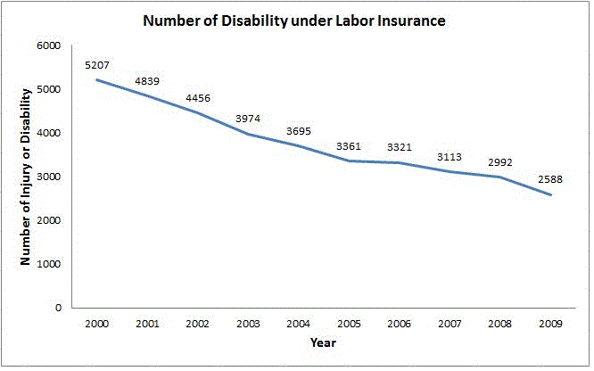
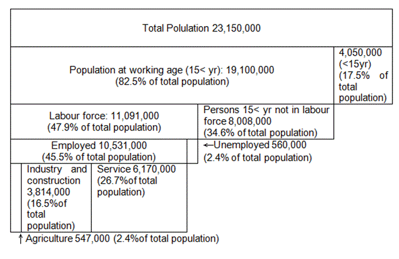

Introduction
Taiwan’s industrial safety and health efforts began in 1947. There was an industrial health section in Department of the Health Bureau of the Provincial Government engaged in occupational disease prevention work. Later, after some serious incidents resulting from occupational hazards in the workplace, the Labor Safety and Health Act was passed in 1974, making Taiwan the second nation in Asia (and third in the world) with labor safety and health laws. In 1987, a labor safety and health committee was established under the Executive Yuan, and that raised the level of labor safety and health regulatory organizations to the departmental level. Taiwan currently has about 10.4 million laborers and about 40,000 occupational safety and health professionals. The government has been striving to care for laborers, and every year it launches many projects to reduce and prevent occupational hazards. More than NT$1 billion has been spent for these projects.1 Occupational safety and health (OSH) legislative framework
1.1 Provisions of the Constitution
The constitution of the Republic of China (1947) states in its Article 15, that “The right of existence, the right of work, and the right of property shall be guaranteed to the people.” The constitution also specifies that the government should enforce laws and implement policies that protect labors.1.2 Major laws on occupational safety and health (OSH)
The Council of Labour Affairs (CLA) is the authority of the six main laws related to occupational safety and health: the Factory Law, the Labour Inspection Law, the Labour Insurance Act, Labour Safety and Health Act, Labour Standards Act, and the Protection for workers Incurring Occupational Accidents Act.The Factory Law was established in 1929, with 77 Articles, and implemented in 1931. All factories that use engines are applied to this law. The Labour Inspection Law was announced in 1931 with 20 Articles, for the implementation of labour inspection, the enforcement of all labour laws, protection of the labour and employer rights, stabilizing the society and economy growth.
The Labour Insurance Act was announced in 1958 with 87 Articles and implemented in 1960. The main goal is to protect the lives of the labours and enhance social security. The Labour Safety and Health Act is established in 1974 with 34 Articles to prevent occupational accidents and to ensure the health and safety of labours.
Labour Standards Act is set up in 1984 with 86 Articles, the main idea is to regulate the minimum standard of labour conditions, protect labour rights, and enhance the labour and employer relationships. The Protection for workers Incurring Occupational Accidents Act is formulated in 2001 with 41 Articles and implemented in 2002. The aim is to protect the rights of workers in occupational accidents, enhance preventions of occupational accidents, and promote employment safety and economic growth.
1.3 Laws and regulations related to OSH
Regarding the general labour laws, Taiwan also has Gender Equality in Employment Act (2002), Labour Union Law (1929), Employees' Welfare Funds Act (1943), Employment Services Act (1992), and Regulations for the Allocation and Management of the Workers' Retirement Reserve Funds (1986).When it comes to chemical control, Taiwan also has regulations such as Regulations of Organic Solvent Poisoning Prevention, Standards for Measurement of Work Environment, Standards of Permissible Exposure Limits of Airborne Hazardous Substance in Workplace, Toxic Chemical Substances Control Act, Environmental Agents Control Act, Agro-pesticides Management Act, Waste Disposal Act and more.
2 National policy review mechanisms
The Council of Labor Affairs was established on August 1, 1987 under Executive Yuan as a cabinet-level agency in charge of national labor affairs. The Council has one minister, two deputy ministers, and 7~11 commissioners recruited by the minister representing opinions of employers, employees, political, and academic circles to review labor policies, labor laws and regulations, as well as related projects and programs.The Council of Labor Affairs has established eight departments, namely, Department of Labor Relations, Department of Labor Standards, Department of Labor Welfare, Department of Labor Insurance, Department of Labor Safety and Health, Department of Labor Inspection, Department of Planning, and Department of Statistics, together with a Central Region Office; there are also Secretariat, Personnel Office, Accounting Office, Civil Service Ethics Office, Information Management Center, Petitions and Appeals Committee, and Legal Affairs Committee established under the Council; at the same time, there are nine other affiliated agencies, namely, Bureau of Employment and Vocational Training, Institute of Occupational Safety and Health, Northern Region Inspection office, Central Region Inspection Office, Southern Region Inspection Office, Labor Insurance Supervisory Committee, Bureau of Labor Insurance, Labor Pension Fund, and Institutes of Labor Education.
Labor is the foundation of social and economic development of any country.With the challenges posed by an increasingly globalized economy, accelerated industry upgrading and corporate globalization, the government must shoulder the responsibilities of providing a high-quality labor force, strengthening national economic competitiveness, responding to changes in mployer-employee relations, securing labor welfare, and sharing the fruits of economic development with workers. With the increased average life span of Taiwan population, aging society and fewer children are becoming inevitable trends. It is thus important to cover topics such as preparing for the retirement life of workers and maintaining a sufficient supply of labor through labor policies.
Equity, Humanity, Security, and Dignity are the four core principles for the Council of Labor Affairs.
At present, the focus of labor policies is to promote labor rights, labor security, work quality and life quality, and to use progressive labor market policy and active market manipulation to enhance labor capability and labor participation rates; and to assist the less privileged to actively participate in the job market and protect their work rights through integrated measures in the society. At the same time, effectively follow the trends and demands of the job market to strengthen the capability of the labor force and provide high-quality workers needed by enterprises.
At this phase, the Council's visions are to create an equal, dignified, secure and humane work environment in Taiwan from the perspective of career development for laborers.
Major Administrative Efforts
- To develop high-quality labor force and to strengthen job security： Plan for diverse vocational training programs to establish a sound vocational training system to cope with the needs for economic and industrial development; incorporate high-quality training facilities to facilitate human resource development projects and to enhance on-job trainings; increase digital learning chances to provide multiple learning channels for labor; promote measures to integrate school curriculums with job market so that the young students are able to enter the job market upon graduation; strengthen management of public and private employment service facilities to enhance employment match effectiveness; provide entrepreneur consultation and guidance to assist the less privileged to start businesses of their own; review foreign labor policies periodically to enhance audit and management of foreign labor agencies and improve laws to protect rights of foreign labor; promote and improve vocational certification services to better implement vocational certification mechanism; research amendments to employment insurance laws and regulations to better secure the benefits of unemployed labor.
- To implement humane laber conditions and to promote workplace equity： Review the applied scope of Labor Standards Act when necessary to enhance the Act and ensure the rights of labor; effectively implement regulations and measures stipulated in Gender Equality in Employment Act, organize campaigns to raise awareness among the public, and provide litigation assistance; research and amend the related Labor Contract Act to secure rights of emerging servants and non-standard labor; improve the Protective Act of Mass Redundancy of Employees to safeguard rights of mass severed employees; raise the awareness of related regulations against employment discrimination in the Employment Services Act to create a level playing ground for all labor.
- To promote annuity system for better labor welfare： Research and amend labor retirement related laws and regulations, establish the optimal investment portfolio of pension fund to enhance investment performance; promote labor insurance annuity system to secure life of labor and their family in the long run; study and improve utilization and management of labor insurance fund to achieve better financial situation of labor insurance; overhaul regulations of Labor Welfare Act and conduct campaign for better awareness of labor welfare so that the welfare system can be realized; establish labor service network for the less privileged suffering occupational hazards and promote proactive case service projects for labor suffering occupational hazards.
- To strengthen workplace democracy and to expand dialogue mechanism with the society： Facilitate development and synergy of labor union; nurture talents in group negotiation, encourage enterprises to establish internal negotiation mechanism, and promote strategic dialogue mechanism among employer, employee, and government in different industries; establish and promote improper laboring ruling mechanism to improve the litigation scheme of labor and enhance the effectiveness of resolution and consultation of employer employee disputes; reach consensus with the public on important labor related topics through social dialogue mechanism.
- To establish secure and healthy work environment so as to promote safety and health of labor： Conduct project inspection on high risk business units or activities, and develop related inspection benchmarks; study and develop occupational safety and health laws and regulations, and promote self management system of occupational safety and health; implement security inspection of punching and shearing machine and conduct trainings for security improvement, establish assessment and management projects for chemical registration; promote workplace safety to the public, forge security partnerships with large enterprises, major engineering projects, industrial parks, etc; conduct international exchanges in safety and health technologies; review and modify Occupational Hazard Insurance Act and standards of occupational disease category for labor insurance, announce benefits payment for disability insurance so that life of labor suffering occupational hazards can be safeguarded
3 Coordination and collaboration mechanisms
To balance the power of employers and employee and to stabilize economic development, International Labor Organization (ILO) have centered right to organize, collective bargaining, and right to dispute as the core of labor standards. They are served as the benchmarks for international community to assess the labor rights of individual countries. In Taiwan, Labor Union Law, Collective Agreement Law, and Settlement of Labor Disputes Law are in place to realize right to organize, collective bargaining, and right to dispute so as to ensure labor's right to life and work.Labor Union
- A labor union is defined as: a permanent association organized democratically by a group of workers who have banded together to achieve common goals in maintaining and improving working conditions and uplifting economic status.
- In accordance with Article 6 of the Labor Union Law, labor union can be categorized into craft union and industrial union. The term "industrial union" shall mean the union organized by workers of different crafts in various divisions of one and the same industry. Whereas the term "craft union" shall mean the union jointly organized by workers of one and the same craft. Base on Article 47, 48, 49, and 50 of the Law, unions can organize federation of labor unions when all the legal terms are met.
- 3. Statistics of labor union in Taiwan as of the end of 2007 are listed below: (1) Number of basic industrial union: 995, with 580,315 members. (2) Number of basic craft union: 3,376, with 2,453,347 members. (3) Number of general federation: 75, with 3,783 group members. (4) Number of federation of labor union: 141, with 1,122 group members. (5) Number of labor union: 4,574, with 3,026,508 member, and 35.8% organization rate.
Negotiation between Employers and Employees
The major ways for negotiation between employers and employees are collective bargaining and labor-management conference. The purpose of collective bargaining is to sign Collective Agreement Law. Collective Agreement Law refers to a written contract, concluded between an employer or an incorporated organization of employers on one hand and an incorporated organization of workers on the other hand for the purpose of specifying labor relations.Labor-management conference is a negotiation system to facilitate labor relations, enhance labor cooperation, and prevent various labor related issues beforehand. The basic principles are to encourage voluntary negotiation and cooperation between employers and employees to enhance communications in enterprises, reduce confrontation, increase consensus and eventually converge collective wisdom and potential to implement the agreed conclusions.
As of the end of 2007, 71 companies in total have signed the collective agreements, and up to 16,596 companies have convened labor-management conference.
APEC Chemical Dialogue
The APEC Chemical Dialogue held each year allows the Council of Labour Affairs and the Industrial Development Bureau to cooperate with employers’ organization and discuss about chemical management issues.4 OSH technical standards, guidelines and management systems
4.1 Implementation of OSH management systems
The Occupational Safety and Health Act covers the basic idea of safety and health management, which is the key principle for carrying out safety and health obligations set on the employer. It requires systematic and continuous monitoring of working conditions and eliminating hazards and risk factors, and also emphasizes that safety management and operating procedures shall be carried out in a way that is most suitable and best for the individual enterprise itself.The Council of Labor Affairs (CLA) of Taiwan continues implementing programs to protect the safety and health of labors by encouraging and facilitating enterprise implementing the Taiwan Occupational Safety and Health Management System (TOSHMS), carrying out self-management, continuously improving the performances of occupational safety and health and preventing occupational accidents or illness. The CLA adapts international management system framework to encourage organizations integrating occupational risk assessment into their best practices of business operation.
Taiwan has promoted BS 8800 and Occupational Health and Safety Management System (OHSAS 18001) since 1996, and was one of contributors to the revision of international OHSAS 18001. Be in line with ILO-OSH 2001, Guidelines of TOSHMS was issued by the Council of Labor Affairs (CLA) in 2007. The TOSHMS consists of structural elements of OHSAS 18001:2007, and also adopts the framework and relevant requirements of ILO-OSH 2001.
Enterprises certified by TOSHMS will also meet with the OHSAS 18001 (2007) so as to achieve the aim of “one validation for two certifications”. Through some commercial certification bodies of OHSAS 18001, designated and quality-controlled by the CLA, any organization that passes TOSHMS certification could attain the OHSAS 18001 certificate at the same time, satisfying both “attaining international certification” and “in compliance with domestic guideline”.
Enterprise in Taiwan is required to implement effective OSH management system. At this moment, implementation of the TOSHMS is not mandatory, however, enterprise is encouraged to implement. Enterprise implementing its own in-house OSH management system is also encouraged to obtain the performance recognition from CLA.
By August 2010, there are around 500 enterprises passing the TOSHMS certification, and the average reduction of occupational accident rate as compared with those without TOSHMS certification is around 20% reduction. To continuously improving performance and preventing occupational accidents and ill health, voluntary TOSHMS families have been established to facilitate the experience sharing of OSH self- management in 2010.
In near future, CLA will issue a special TOSHMS guideline for construction industry and the Economic ministry will publish national standards for OSHMS. The risk assessment campaign and enlargement of TOSHMS families will continuously launch to protect the health and safety of Taiwan workforces.
4.2 Information materials based on ILO Technical Standards and Codes of Practice
Guidelines by various institutions
The Institute of Occupational Safety and Health, IOSH, is a research institute under the jurisdiction of the Council of Labor Affairs (CLA), Executive Yuan. Its important missions include application of scientific technology, surveys and analyses of various risk factors in the working environment, as well as development of countermeasures. The IOSH continuously updates practical guidelines on various occupational safety topics, such as mechanical, electrical, construction, and chemical safety, as well as function of personal protection equipment. It also provides guidelines on occupational hygiene, such as prevention of musculoskeletal injuries through ergonomics.Globally Harmonized System of Classification and Labeling of Chemicals (GHS)
Improper use of hazardous chemicals will result in poisoning and cancer of workers, as well as disasters such as fire and explosion. It is thus imperative for workers to know more about chemicals and a consistent system for classification and labeling of chemicals is in need. To cope with the implementation of Globally Harmonized System of Classification and Labeling of Chemicals (GHS) by the United Nations in 2008, the Council of Labor Affairs plans to propose "GHS Project (2006-2008)". The project will be implemented after the approval of the Executive Yuan. It involves agencies including labor, environmental protection, transportation, fire, etc.The Council of Labor Affairs has already developed "GHS for Dangerous and Hazardous Substances" to be implemented simultaneously with other government agencies by the end of 2008. To assist industry practitioners to implement GHS system, the Council has established websites and online teaching services regarding GHS of chemicals, telephone and voice automatic fax services, expansion of GHS websites providing classification meeting GHS regulations, 1648 labelings, safety data table with 1597 data entries. At the same time, mixture claasificaiton professional system is established, train the trainer program is conducted, and chemical practitioner guidance and training programs are provided so that the business entities can easily access to information on the implementing of GHS system.
5 OSH system implementation: Means and tools
5.1 National competent bodies with OSH implementation responsibilities
The Council of Labour Affairs (CLA) is the authority responsible for the occupational safety and health administration in Taiwan’s government which believes that safeguarding safety and health of labor in the workplace is not only the basic labor rights, but also a critical indicator for national progress. Since the establishment of the Council on August 1, 1987, hazard mitigation has been an important task for the Council. In order to cope with the national industrial trend and demand at various phases of hazard mitigation, programs of hazard mitigation are proactively promoted including amendment to the labor safety and health regulations, annual focal inspection directions, and strengthening of prevention and research of occupational hazards. The Council developed Promotional Program for Occupational Safety and Health to promote the administrative visions of "occupational safety", "physical and mental health", "comfortable work environment" and "friendly workplace", etc, to realize the protection of human rights in Taiwan.
The major OSH works of the Council are the following:
- Establish national occupational hazard prevention system for construction industry
- Promote system of machinery safety certification to realize the safety management of machinery from the source
- Establish certification system for the explosion-proof electrical apparatus to enhance the explosion-proof technology of electrical apparatus
- Promotion of Globally Harmonized System of Classification and Labeling of Chemicals (GHS)
- Realize operational environment assessment system and evaluate hazard exposure conditions of labor
- Strengthen management of assigned medical facilities of labor health checkup to ensure quality of labor health checkup
- Establish national occupational health hazard prevention and monitoring system
- Strengthen treatment services for occupational hazards
- Establish occupational injury and disease treatment management service center and improve occupational injury and disease reporting system
- Modify (stipulate) determination standards for occupational disease and establish assessment mechanism for occupational disease to secure labor rights
- Machinery Safety Certification
- Assist small and medium enterprises to established safe working environment
- Hold National Occupational Safety and Health Week activities and establish mechanism for citizens to participate in promotion of work safety
- Hold National Industrial Safety Award to encourage enterprises with top-notch work safety standards and establish role models for other enterprises
5.1.1 Inspection and enforcement systems
With regard to Labour inspection, the Council has practically amended Labor Inspection Law to lay a good foundation for Taiwan's labor inspection system since 1987. As a result, the number and frequency of inspections and punishment rate have increased significantly, and occupational disasters are under effective control.
Promotion of Labor inspection is handled by the central competent authority (the Council) or to be authorized to the competent authorities of municipalities, or related labor inspection agencies. Aside from the responsibility of planning for labor inspection strategies, regulation implementation, and supervision, the central competent authority also established Northern Region Inspection Office, Central Region Inspection Office, and Southern Region Inspection Office to handle the inspection business. In addition, agencies authorized by the central competent authority to handle labor inspection include Export Processing Zone Administration, Ministry of Economic Affairs, Science Park Administration, Central Taiwan Science Park Provisional Office, and Southern Taiwan Science Park Administration, etc.
Scope of labor inspection includes the compliance of Labor Inspection Act, Labor Standards Act, Labor Safety and Health Act, Labor Insurance Act, Employee Welfare Fund Act, Employment Service Act, etc. and other related laws. In addition, dangerous machinery and facilities will be inspected by labor inspectors dispatched by labor inspection agencies, as well as proxy inspectors dispatched by proxy inspection organizations.
To achieve one of the three major administrative goals of the Council, "Safe environment", the Council has gradually promoted various disaster mitigation projects which have effectively reduced the death toll of occupational disasters in all industries from 77 per million in 2000 to 36 per million in 2008. In the future, the Council will continue to promote disaster mitigation programs based on the principles of "Life can't wait " and "Can't repeat life". At present, the Council is planning to develop a cross-agency "Promotion Project for Occupational Safety and Health", in the hope of inviting other related competent authorities to jointly promote disaster mitigation projects so as to safeguard work safety and health of our citizens.
Aside from the Northern Region Inspection Office, Central Region Inspection Office, and Southern Region Inspection Office under the Council, there are an additional six labor inspection agencies authorized by the Council with 309 inspectors including Labor Inspection Office of Taipei City Government, Labor Inspection Office of Kaohsiung City Government, Science Park Administration, Central Taiwan Science Park Administration, Southern Taiwan Science Park Administration, and Export Processing Zone Administration, Ministry of Economic Affairs.
In addition, inspection of dangerous machinery and facilities are consigned to seven proxy inspection agencies including Industrial Safety and Health Association of Taiwan, R.O.C., Crane Association of Taiwan, R.O.C., Mechanical Safety Association of Kaohsiung City, Chinese Boiler Association, Taiwan Boiler Association, Chinese Pressure Vessel Association, and Chinese Institute of the Labor Force with a total of 106 proxy inspectors.
Strategies of Labor Inspection:
- Adopt 3-in-1 approach of "promotion, inspection, and guidance" to improve the safety and health levels of workplace.
- Strengthen registration, classified management, monitoring, and inspection of construction industry, highly risky industries or workplace.
- Strengthen training of labor inspectors and establishment of labor inspection technical manual and guidelines to enhance the effectiveness of labor inspection.
- Establish approaches and environment in favor of self-management of organizations and business to change the attitude of safety and health in business entities so as to jointly mitigate the occurrence of occupational disasters.
- Integrate efforts of promotional associations of labor safety and health, regional prevention organizations, and industrial associations to jointly engage in the work of promoting safety and health.
- Coordinate with other government agencies to conduct joint audits so as to shoulder the responsibilities of disaster prevention and establish the culture of high quality public construction projects which are safe and healthy.
- Establish prevention and guidance approaches for occupational disasters; provide small and premium enterprises and specific manufacturing industries with diagnosis, guidance and consultation of safety and health.
- Develop high quality safety and health technical service system; provide business entities with effective information and management approaches in terms of safety and health.
Focal Points of 2008:
Enhance quality and effectiveness of labor inspection
Realize audit and inspection systems in advance for dangerous workplace
Improve inspection management system for dangerous machinery and facilities
Strengthen disaster prevention capability of public construction projects
Get hold of harmful work environment domestically to secure the health of labor
There is also another authority concerned related to inspection:
The Bureau of Standards, Metrology and Inspection (BSMI)
The Bureau of Standards, Metrology and Inspection (BSMI) under the Ministry of Economic Affairs is the authority responsible for standardization, metrology and product inspection in Taiwan, including chemical properties and product safety. BSMI is also responsible for setting national standard for chemical testing and hazard categorization.
5.1.2 OSH research institutions and OSH laboratories OSH research institutions
Environmental Analysis Laboratory, EPA, Executive Yuan
The Environmental Analysis Laboratory (EAL) was established on January 10, 1990 to provide policymakers with the necessary environmental data. The EAL is divided into five divisions: (1) planning and management of environmental analysis, (2) air and physical analysis, (3) water analysis, (4) toxic substances, waste and soil analysis, (5) environmental biological testing. The EAL's mission is threefold: to effectively upgrade the quality of national environmental analysis data, to actively enhance the capability of public and private environmental analytical laboratories, and to provide support to meet the environmental analysis requirements of all levels of environmental protection authorities in line with the principles of efficiency, quality data, and credibility. To enhance quality assurance and environmental analysis credibility, the EAL received laboratory accreditation from NATA (National Association of Testing Authorities, Australia) on January 31, 1995.
Institute of Occupational Safety and Health
Institute of Occupational Safety and Health was established in August 1992 and has become the most important research institute in Taiwan dedicated to occupational safety and health. In order to conduct research more systematically, the Institute brought up the "Short, medium, and long term research plan for Institute of Occupational Safety and Health" for the first time in 1994. In 1997, 2001, and 2004, the "Research strategic plans for labor safety and health for 1997-2001, 2001-2005, and 2005-2008" and "Plans for 2009-2012" were proposed. During January to June of 2008, multiple internal and external conferences were held to collect valuable insights of fellow researchers, professionals, and scholars. The Institute has contributed to the investigation of domestic labor safety and health statu, integration of international trend, assistance of disaster litigation project of Council of Labor Affairs, introduction of overseas advanced technology, and establishment of web-based database for local safety and health information. Meanwhile, through seminars, conferences, technical transfers, and publications, the Institute has accomplished positive outcome for the promotion and application of research findings. Please visit the website of the Institute for more information on research of occupational safety and health in Taiwan.
Safety and Health Technology Center (SAHTECH)
Safety and Health Technology Center provides various services, including chemical management, integrated technology and management system of safety and health. SAHTECH’s main RD field specializes in high-tech safety, chemical safety, risk management, software design and establishment of various management systems, such as Hazard Communication and Taiwan Occupational Safety and Health Management System (TOSHMS), etc. SAHTECH is also a long-term partner with competent authorities in developing and implementing national programs such as the GHS and National Chemical Substances Inventory.
The Center for Control and Administration of Specific Medical Antidotes in Emergencies (for chemical toxication)
The Center for Control and Administration of Specific Medical Antidotes in Emergencies was established in 2000 at the Taipei Veterans General Hospital by the Department of Health (DOH) of the Executive Yuan. Its purpose was to build a nation-wide network of antidote stocking in order to: (1) relieve difficulties faced by hospitals without specific antidotes in toxicological emergencies, and (2) to establish a comprehensive poisoning prevention system to respond to large-scale poisoning accidents, including chemical accidents.
Taiwan Occupational Health Association
The Taiwan Occupational Health Association (TOHA) was founded in 1995. The aims of TOHA are 1) to receive requests to execute occupational health researches 2) to organize occupational health-related discussion panels 3) to train and develop professionals engaged in occupational health technology 4) to encourage occupational health technology exchanges and strengthen partnerships 5) to publish occupational health-related periodicals 6) to promote policies enhancing health in job environments and to assist in implementing policies to protect the health of workers. The committees in TOHA are responsible for the promotion of occupational health in Taiwan. The average number of members has increased by about 10%. TOHA members come from a wide range of organizations including companies, schools, government organizations, non-profit organizations and others. Every year TOHA publishes about 2,000 copies of seasonal periodicals with the latest information on occupational health and safety information for all members and other organizations concerned with job safety and health. In each year, TOHA also holds an annual national industrial and occupational health and safety conference and discussion panel, and publishes around 200 papers.
5.1.3 OSH information centres
Emergency Response Information Center and Emergency Response Teams for Chemical Accidents
The Emergency Response Information Center provides technical and information support in chemical accident emergency response. There is a 24-hour monitoring and reporting system in place and seven emergency response teams can be dispatched to the accident sites.
ITRI Emergency Response Information Center (ERIC)
Commencing 1996, Taiwan EPA established the Emergency Response Information Center (ERIC) within Industrial Technology Research Institute (ITRI) to provide technical support of toxic chemical accident emergency response. Seven emergency response teams are operated in 7 cities in the north, central and south regions to offer 24 hours/365 days service of chemical accident/spill emergency response.
5.1.4 Occupational health services
Small and medium enterprises in traditional industries have always been an important link in the economic development of Taiwan. However, with the relatively shortage of manpower and materials, as well as the long term shortage of inspection personnel, it is difficult to conduct all-round inspection guidance so that the safety and health measures are not comprehensive enough which attrite to the insufficient disaster prevention resources of the less privileged traditional industries. The Council of Labour Affairs hopes that the local governments will be able to guide and assist these enterprises to improve their work environment based on the principle of "respect safety and life".
To assist small and medium enterprises to established safe working environment, the Council has provided workplace safety guidance to small and medium enterprises and partnered with local labor administrative agencies to promote "Labor Safety and Health Local Program" (or the so called Dandelion Program). Counties and cities recruited volunteers to establish on-site workplace safety visit team to implement disaster mitigation measures such as "on-site work safety guidance", "safety facility subsidy", "educational training and on-site promotion", etc. to provide on-site guidance, facility subsidy and disaster prevention promotion to small and medium enterprises as well as micro projects in each city and county. Through the local "labor safety on-site visit volunteers", the accurate disaster prevention information can be communicated to small and medium enterprise under 50 staff, and spread "Labor safety disaster prevention message" (safety and health seeds) just like the seeds of the dandelion to every citizen and labor. Eventually, such message will be distributed to every factory in Taiwan to effectively secure the life, safety, and health of each and every worker.
5.1.5 Workmen's compensation and insurance schemes
Labor insurance is a mandatory social insurance based on principles of self-help and mutual-aid to gather efforts of people and government to secure labor life and enhance social safety in a way of sharing risks. In addition, the Council of Labour Affairs (CLA) has proactively realized labor insurance annuity system to establish a comprehensive social safety net for retired labor. Taiwan has entered the era of aging society and women are having fewer children, annuity benefits are the trend of our time. Furthermore, the existing one-time payment of labor insurance is prone to depreciate due to inflation or exhausted due to improper investment and not be able to secure the long term economic security of labor and their survivors. To cope with changes in Taiwan's demographic composition and secure long term life security of labor and their survivors, amendment to labor insurance annuity system was announced on August 13, 2008 and will be implemented on January 1, 2009. To cope with the adoption of labor insurance annuity system, the Council continues to hold meetings to explain the system and promote the system in media such as TV, newspapers, and radios to strengthen labor's understanding to annuity system.
Occupational injury insurance provides medical benefits and cash subsidies for injury, disease, disability, or death of the insured when they are job on-duty. The insurance reduces losses of the insured caused by occupational hazards and provides life security to the insured and their survivors.
Employment insurance provides subsidies to enhance employment skills of labor, enhance employment, secure basic life standards during unemployment, and provide unemployment payments, allowances during training, early employment allowances, allowances for universal health insurance premium, etc. Occupational trainings and employment enhancement shall also be conducted with funds from the employment insurance.
5.2 Professional education, training, retraining and raising of qualification
There are various educational institutions which provide trainings in occupational safety and health at various levels, as well as special trainings for occupational health professionals, such as occupational physicians and nurses.
5.2.1 Programmes of higher professional and postgraduate education
Institute of Occupational Medicine and Industrial Hygiene, National Taiwan University
The Institute of Occupational Medicine and Industrial Hygiene (OMIH) of National Taiwan University was established in the year 1993, and it is the first graduate institute majoring in occupational medicine and industrial hygiene in Taiwan. The mission of the Institute is to advance the health of all people in occupational and community settings in Taiwan, Asia, and around the world through teaching, research, and services in occupational and environmental health. Faculty members in the institute investigate causes, risks, mechanisms, biomarkers, and prevention measures of environmentally and occupationally related health issues, provide advanced education programs of occupational health with master and doctoral degrees, and provide scientifically based public health services to the public, governments, industries, and the labors. Research approaches range from molecular to epidemiologic, in physical scales of nano- to macro-, and by multiple disciplines of physical, chemical, biological, sociobehavioral sciences, and ergonomics. In most occasions, the Institute has tried to tackle important public health problems that require integrated contributions of many advanced specialties.
Other educational institutions in Taiwan
Besides the Institute of Occupational Medicine and Industrial Hygiene at National Taiwan University, there are also other universities offering the educational training in the fields of occupational safety and health:
- Institute of Environmental and Occupational Health Sciences, National Yang Ming University
- Department of Health Promotion and Health Education, National Taiwan Normal University
- School of Public Health, National Defense Medical Center
- School of Public Health, Taipei Medical University
- Department of Public Health, College of Medicine, Fu-Jen Catholic University
- Department of Occupational Safety and Health, China Medical University
- School of Occupational Safety and Health, Chung Shan Medical University
- Graduate Institute of Occupational Safety and Health, Kaohsiung Medical University
- Department of Public Health, Tzu Chi University
5.3 Specialized scientific, technical and medical institutions related to various aspects of OSH
5.3.1 Standards setting bodies
The regulations, policies, and standards of OSH are established and edited by the Department of Labor Safety and Health, Council of Labor Affairs. The department is also responsible for instructing and supervising OSH trainings. It encourages enterprises to implement the OSH management system (OSHMS) to protect the safety and health of labors (see chapter 4.1).
5.3.2 Bodies specializing in hazard and risk assessment
The Taiwan Chapter of Society for Risk Analysis (TCSRA) has been officially chaptered and announced during the Society Risk Analysis (SRA) 2005 Annual Meeting. It is believed that with its establishment, it can not only promote the advancement of research and education on risk analysis in Taiwan, but also provide all professionals from diverse field opportunities to exchange information, ideas, and methodologies for risk analysis and risk-problem solution. In addition, it can be beneficial on human health and ecological risk analysis and governmental decision-making process.
Many of the TCSRA members are associated with research institutes or universities and have backgrounds in environmental health and nature sciences and social sciences. Their research activities are primarily related to risk perception, social concerns, exposure assessment, toxicology, environmental risk and food safety, exposure factor database in Taiwan, risk-based recommended exposure limits in workplaces, health and ecological risk assessment for pesticides, and application of statistics in risk assessment. The study of risk altitudes and perception of nano-materials is also under investigation by our memebrs. With members from various fields, TCSRA has great potential to expand its interdisciplinary activities for risk analysis.
TCSRA is an officially registered organization as a nationwide academic society in Taiwan by following the Taiwan Social Organization Law. The Preparation Committee is working on invitation of international scholars and guests to attend future annual events. Also, TCSRA intends to organize workshops and seminars and encourage our members to work with other international groups on various issues in risk analysis.
5.3.3 Bodies prepared for safety operations in emergency situations
Emergency Response Information Center (ERIC)
The Emergency Response Information Center (ERIC), established by Industrial Technology Research Institute (ITRI), was the first emergency rescue center targeting industrial accidents involving hazardous chemicals. ERIC assisted industry in setting up emergency response and consulting services for handling hazardous accidents and providing Environmental Protection Administration, Executive Yuan, National Fire Agency, Ministry of the Interior, and relative industries with important emergency response information through Internet.
Taiwan Society of Emergency Medicine
Founded in 1994 by Professor Sheng-Chuan Hu and about 200 physicians sharing a commitment to improving the quality of Taiwan’s emergency care, the Taiwan Society of Emergency Medicine (TSEM) is the largest national medical speciality organization representing physicians who practice emergency medicine. TSEM is dedicated to the improvement of emergency care of acutely ill and injured patients in hospital and prehospital environments by improving research and education in the specialty.
The missions of TSEM are as follow:
1. To promote research in emergency medicine.
2. To improve the quality of emergency care in hospital and prehospital environments.
3. To popularize resuscitation skills.
4. To facilitate the interchange of clinical experiences in emergency medicine.
5. To develop and monitor an emergency medicine residency program.
6. To promote international and interspecialty academic interchange and collaboration.
7. To advance continuing medical education in the specialty.
8. To promote the general welfare of emergency medicine.
In cooperation with the Department of Health, TSEM plays an important role in the development and improvement of emergency medical care systems in Taiwan. TSEM has also actively participated in the coordination of medical care in many major domestic disasters such as the 921 earthquake in 1999 and the SARS outbreak in 2003. Whenever the public needs emergency care, TSEM is there providing rescue and medical services on the front line.
In 1997, emergency medicine was recognized as the 23rd medical specialty by the Department of Health, a major milestone for TSEM and its members. Since then, TSEM has been responsible for the development and monitoring of emergency medicine residency programs. The society also provides in-depth continuing professional education for physicians, nurses and ancillary emergency health care practitioners and supports academic research in the specialty. Through these efforts, TSEM expects to improve the quality of emergency care in Taiwan.
5.3.4 Insurance bodies
The Government of the Republic of China established its labor insurance program in March 1950, which is the first compulsory social insurance program. Successively later on, the Craft Workers' Insurance Program was carried out in 1951, and the Fishermen's Insurance in 1953. However, the Government promulgated the Labor Insurance Act until 1958 and put it into effect in 1960. In the meantime, all the three separate programs were nullified. The Act was amended in 1968, 1973, 1979, 1988, 1995, 2000, 2001, 2003 and 2008 for the purposes of expanding its coverage for more labor, offering better protection, and providing more generous benefits. Thus, the function of the Program has been successfully promoted. After March 1995, the medical care for ordinary accident is provided by the National Health Program. Due to the cooperation and support of the majority of employers and employees of various industries during the past forty years, the outcome of the Program is quite encouraging. The success of the Program has effectively helped the Government carry out its economic development plan, resulting in a rapid economic growth, which is well-known worldwide. As a consequence, more labor are covered by the program with more benefits.
In order to build up a complete labor insurance pension protection system and offer the insured person or insured person’s dependents long term living care, the government deliberates upon the opinions from all walks of life, takes Taiwan's unique economic and social situation into consideration and learns from the experience of advanced countries in the implementation of pension system to plan disability, old-age and survivor’s pension system, and the system has come into force on January 1, 2009. Before that, the labor insurance offers cash benefits include: maternity, injury or sickness, disability, old-age and death benefits. After the implementation of labor insurance pension program, monthly pension approach for claiming disability, old-age and death benefits has been added ,which are “old-age pension benefits”, “disability pension benefits” and “survivor pension benefits”. Through the implementation of the labor insurance pension scheme, labors will obtain more complete labor insurance protection.
Bureau of Labor Insurance
The first social insurance program in Taiwan – labor insurance – began in 1950. Since its implementation, the statutes governing the labor insurance system have undergone revisions several times in response to social changes and economic development. These amendments have expanded the range of insurance beneficiaries, gradually increased different types of benefits, progressively lowered requirements of benefits payment and brought about greater protection for the laborers' work and lives. Labor insurance lifted the curtain on our country’s social insurance system. As various social security systems were promoted, the delegated businesses operated by the Bureau of Labor Insurance have increased and diversified. The Bureau of Labor Insurance’s organization has thus been increasingly growing in size, providing protection and services for laborers. The following sections will introduce the organizational structure, business profile, and future perspectives of the Bureau of Labor Insurance (hereafter referred to as BLI).
The BLI's primary mission is the handling of labor insurance services; it has also continually been commissioned other social security services. The scope of the BLI's services has been expanded to include social insurance, labor protection, social welfare allowances and so on. The BLI has been commissioned to handle the collection and disbursement of overdue wages payment since November 1986, as well as farmers' health insurance, which the Ministry of Interior entrusted to the BLI since July 1989. In June 1995, the Council of Agriculture commissioned the BLI to handle the oldage farmers' welfare allowance program. On April 28, 2002, the BLI was commissioned to handle the subsidies of occupational accident labor protection. In June 2002, the BLI was commissioned by the Ministry of Interior and the Council of Indigenous Peoples, Executive Yuan to handle the old-age citizens' and indigenes' welfare allowance programs. On January 1, 2003, the BLI began to implement the employment insurance program; on July 1, 2005, it started implementing the new labor pension program. On October 1, 2008, the BLI was commissioned by the Ministry of Interior to implement the national pension program.
5.4 Overall national level of human resources active in the area of OSH
There are 80 lifetime members, 128 regular members and 98 student members in TOHA. TOHA members come from a wide range of organizations including companies, schools, government organizations, non-profit organizations and others. Every year this association publishes about 2,000 copies of seasonal periodicals with the latest information on occupational health and safety information for all TOHA members and other organizations concerned with job safety and health. Each year, we arrange a nationwide industrial and occupational health and safety discussion panel and publish around 200 papers.
5.4.1 Occupational health services personnel and safety personnel
There are three major types of occupational safety and health personnel. That is, Occupational safety and health professionals and experts, workplace safety and health personnel, and OSH inspectors. There are three major types of occupational safety and health personnel. That is, Occupational safety and health professionals and experts, workplace safety and health personnel, and OSH inspectors. Currently there are about 40,000 occupational safety and health professionals including 250 occupational health physicians in Taiwan.
5.4.2 Number of environmental protection specialists
The Environmental Protection Administration (EPA) of Taiwan is responsible of the environmental protection activities. The EPA governs seven departments: comprehensive planning, air quality protection and noise control, water quality protection, waste management, environmental sanitation and toxic substance management, supervision evaluation and dispute resolution, environmental monitoring and information management. Each city and county government gradually set up an Environmental Protection Bureau to enhance environmental protection work and function between 1988 and 1991. In total, there are 25 regional bureau of environmental protection.
6 Statistics on occupational accidents and diseases
6.1 Fundamentals of qualifying cases of occupational injuries and diseases
Taiwan’s occupational injury and disease reporting system
The discovery rate of occupational disease in Taiwan is far lower than industrialized countries (occupational disease incidence in Taiwan was 23 per million labors in 2003, while it was 118 in Korea, 125 in Japan, 239 in Singapore, and 259 in the U.K.), this is the result of the absence of occupational disease reporting system. The Council has planned to establish a reporting system within two years (in the first year, plan and complete system connections among eight treatment centers and all occupational injury and disease outpatient systems; in the second year, complete system connections among all hospitals nationwide）. The reporting system allows administrative agencies to get hold of number of occupational injury and disease cases in a timely manner to solve the issue of under-estimate of occupational injury and disease incidence in Taiwan.Since 2002, the Council of Labour Affairs has planned Occupational Injury and Disease Diagnostic and Treatment Centers in major medicine centers in north, central, south, and east parts of Taiwan. This arrangement connects the community network and offers the labours easier access to services in diagnostic, treatment, investigation, examination, and report.
In order to enhance the occupational injury and disease service quality and establish a platform for communication, since 2007, the administrative services related to occupational injury and disease are transferred from the Department of Health to Council of Labour Affairs, and the Council of Labour Affairs thus authorizes National Taiwan University to implement the “Occupational Injury and Disease Service Management Center Plan”, where a “occupational injury and disease reporting system” (not related to the past reporting system in the Department of Health) is established. In the mean time, all the Occupational Injury and Disease Diagnostic and Treatment Centers are all included in the reporting system.
In addition, the Bureau of Labour Insurance also developed a “Preventive Occupational Disease Health Examination System” with the Institute of Occupational Safety and Health, with the view to provide funds for special labour health insurance.
Present situation in occupational disaster and occupational disease reporting system
The current reporting system in Taiwan is divided into two categories: occupational disaster and occupational disease. The statistic sources of occupational disaster from the government come from: 1) occupational injuries under labour insurance 2) reported serious occupational disaster information by labour inspection 3) monthly occupational disaster reports to the Council of Labour Affairs by each enterprise. The former two sources are more often quoted; however, besides the serious occupational disaster are reported, other occupational accidents, regardless of its seriousness, are not required to be reported. The employers are reluctant to do so as well. Therefore, the occupational disaster data are often underestimated. Because of the difference in legal basis, purpose of the data, data collecting incentives, legal requirements, data sources, reporting interface, and the instantaneity of the data. In conclusion, Taiwan is in need of an integrated reporting system.
As for the reporting statistics of occupational disease, Taiwan has always had underestimated diagnosed cases. The Council of Labour Affairs and the Department of Health have their own system, but the occupational disease cases from the labour insurance is still the main database. In addition, the “occupational injury and disease reporting system” set up by the Department of Health has also transferred this service to the Council of Labour Affairs in 2007. If occupational disease doctors identify cases that are occupational disease, they can then automatically report it to the Department of Health, and then it will be investigated by peers. Yet since the reporting possibilities mentioned above don’t have legal compulsory basis, therefore the reporting are not completely carried out and thus result in the difference in data.
6.2 Key indicators of occupational injuries and diseases
The Council consigned medical associations to establish determination standards for occupational disease. 108 standards were established and posted on website of the Council to serve as reference for doctors. However, with the advancement in the medical field, there have been suggestions from all circles of life on amendments for determination standards. The Council will consign professionals, scholars and related medical associations to review and amend the standards on an annual basis. In recent years, determination standards for exhaustion (acute cardiovascular disease triggered by vocation), chemical poisoning (such as manganese, benzene, n-Hexane, and beryllium), and bone and muscle injury in waist and neck have been amended. Furthermore, with the rapid industrial transformation and significant increase of workers in financial sector, these workers experience unhealthy work conditions such as overtime, abnormal shifts, and stress in order to confront with global competition. In addition, emerging occupational disease such as mental disorders (e.g. depression) invoked by vocation happens quite frequently. In the future, the Council will work with Labor Safety and Health Research Institute to proactively collect and compare the determination standards of newly emerging occupational disease in countries such as Japan. The research results plus the local research findings can serve as reference for the development of determination standards or benchmarks to strengthen labor protection.
6.3 Occupational fatalities under labor insurance

(Bureau of Labor Insurance 2010)
6.4 Number of occupational injury or illness under labor insurance
(Bureau of Labor Insurance 2010)
6.5 Number of occupational disability under labor insurance

(Bureau of Labor Insurance 2010)
7 Policies and programmes of employers' and workers' organizations
7.1 Labor Unions
Taiwan Confederation of Trade Unions (TCTU)
After years of labor movement struggle, the Taiwan Confederation of Trade Unions (TCTU), Taiwan's first legal and autonomous national trade union, was recognized by the government on May 1, 2000. Although TCTU is young, it is the most active labor organization in Taiwan. TCTU is rooted in the long history of working class struggle on our island. We believe this history is vital to the continuing development of the labor movement and its role in building a democratic society in Taiwan.
TCTU currently includes 21 member unions, including telecommunication, petroleum, tobacco, alcohol, railway, bus, and banking industries and 9 local trade union federations. Local unions in un-represented counties are also actively working towards the formation of county federations, and plan to affiliate with TCTU.
To deal with the changing environment in Taiwan, TCTU has established several committees. First, the Organizing Drive Committee promotes the formation of union federations among industries or regions, and raises the union participation rate in Taiwan. Second, the Labor Law Policy Committee fights for reforms of the present system of labor regulations, and prepares for future attacks on workers' interests by the government national pension plan. TCTU has set up a Committee on Privatization to critique and monitor the government's privatization schemes. To deal with the crisis of unemployment and plant closures, we have established an Unemployment and Employment Committee.
Under the globalized capitalst economy, we know that the situations, conditions and struggles of Taiwan's workers are shared by yhe working class around the world. Therefore, TCTU also tries to communicate and cooperate with international labor organizations, participating in conferences, and international campaigns through our International Department.
The Taiwanese labor movement has fought towards the creation of TCTU for more than a decade, but our mission has just begun. There are more and more challenges ahead of us now and we look forward to continuing our struggle and contributions towards a just and equitablesociety for workers in Taiwan and around the world.
The National Federation of Bank Employees Unions (NFBEU)
After the abolishment of the Martial Law in 1987, for the gradual deregulation of the banking sector and liberalization and internationalization of financial policies strongly enforced by the government, the banking industry here in Taiwan has been confronting keen competitions and pressures in the market. The number of bank employees has also rapidly increased. After the end of the authoritarian regime and the revision of the Settling Labor Dispute Law, the "Three Labor Rights" of bank employees could be legally claimed. Based on these transformations, employees of the banking sector realized that only workers united to organize unions could they fight against unfairness and demand for their rights.
In 1988, bank employees realized the importance of being united and began to organize unions. In 1991, by Article 49 of the Labor Union Law, "The National Federation of Bank Employees Unions" (NFBEU), initiated by 9 unions including the Bank Trade Union Federations of Taipei City, Kaohsiung City, Taipei County, Taoyuan County, Miaoli County, Taichung City, Tainan City, Hualian County, and Yilan County, applied for legal recognition by sending required documents to the Council of Labor Affairs, Executive Yuan (CLA), the central competent authority of labor affairs in Taiwan. Unfortunately, the CLA then rejected the application due to the not-timely statutes in labor laws. Consider practically and realistically for union movement, "The National Federation of Bank Employees Unions" formally announced its establishment on September 6th, 1993.
8 Regular and on-going activities related to OSH: Examples
8.1 Regular activities at the national level
8.1.1 National initiatives
National Occupational Safety and Health Week
In order to strengthen the awareness of workplace safety among citizens, Council of Labor Affairs has planned a series of activities in the National Occupational Safety and Health Week since 2006, which has triggered great attention from around the country. Related agencies have proactively held various disaster mitigation promotion and guidance activities to effectively enhance the overall safety and health standards of Taiwan as a whole. To continuously establish the mechanism for participation of work place safety by citizens and increase the knowledge and capacity of disaster mitigation in the workplace, the Council expanded the scope of Occupational Safety Week (July 1 to July 7) and Occupational Health Week (May 1 to May 7) incorporating the subject of facilitation of occupational health in 2008 to effectively integrate efforts from government agencies, city and county governments, large public-owned and private enterprises, industrial parks, and science parks to conduct activities such as promotion of workplace safety and health, trainings, seminars, guidance, and community outreach.
National Industrial Safety Award
In order to encourage enterprises and individuals to promote safety and health in the workplace, and to promote mechanism for full citizen participation of work safety, In 2007 the Council established the first national occupational safety and health honor: "National Industrial Safety Award" to establish role models for high-quality occupational safety and health culture.
The award was given based on the enterprise's closed loop management of safety and health strategies, organizations, systems, planning, performance, implementation, inspection, and correction. The objectives of the award are to realize the full participation of work safety within enterprise, integrate the concept of respect life into the core value of the enterprise, establish high quality occupational safety and health, and create the sustainable vision of the enterprise.
8.2 International collaboration
International Society for Environmental Epidemiology (ISEE)
ISEE is an international organization with members from more than 50 countries and regional chapters and local groups in Latin America and the Caribbean, the Mediterranean, Central and Eastern Europe, the Caucasus, South Asia, and East Asia.
The 9th annual conference of the International Society for Environmental Epidemiology (ISEE) was held at the Academia Sinica International Center in Taipei, Taiwan, August 17 to 20, 1997. The theme of the conference, organized by Dr. Chien-Jen Chen, was "Meeting of the West and the East: Prevention of Environmental Diseases through Integrated International Efforts." More than 200 scientists from 37 countries attended the meeting.
Asia-Pacific Economic Cooperation (APEC) Chemical Dialogue
The Chemical Dialogue (CD) serves as a forum for regulatory officials and industry representatives to find solutions to challenges facing the chemical industry and users of chemicals in the Asia-Pacific region. It reflects APEC members' recognition of the importance of engaging with the private sector and building public-private sector dialogue and cooperation for mutual benefit.
The 9th APEC Chemical Dialogue was held in Hiroshima, Japan on March 1 to March 4, 2010.Science Committee on Epidemiology in Occupational Health (EPICOH)
The Scientific Committee on Epidemiology in Occupational Health (EPICOH) of the ICOH has as its main function promotion of communication among epidemiologists, industrial hygienists, and other occupational health scientists worldwide. EPICOH provides a forum for the discussion of problems unique to the study of health and work. With membership open to occupational epidemiologists and other scientists worldwide, EPICOH provides a variety of forums for discussions, critical reviews, collaborations and education on issues of occupational exposures and their human health effects.
The 2010 EPICOH-Medichem Conference was held in Taipei, Taiwan. The mission of this conference is to make whole world's workplaces safer, healthier and more productive. We do this by bringing together and sharing knowledge and information, to promote a culture of risk prevention. Through the conference, we share good practice, and communicate information in a variety of ways to reach workers and workplaces, especially in this new technology century. This conference aims to identify new and emerging risks. In order to achieve this, it will give an overview of safety and health at work in the world, describe the trends and underlying factors, and anticipate changes in work and their likely consequences for safety and health. Additionally, it aims to stimulate debate and reflection among company's stakeholders and to provide a platform for debate between policy-makers at various levels.
9 General data
9.1 Demographic data
9.1.1 Total population
As of September 2010, the total population of Taiwan was 23.15 million, of whom 50.3% were males and 49.7% were females.
(http://www.stat.gov.tw/point.asp?index=4)
Directorate-General of Budget, Accounting and Statistics carries out periodically a labour force survey, which represents the total Taiwanese labour force. The present data are based on the survey of 2010 (Directorate-General of Budget, Accounting and Statistics Taiwan 2010).
The total Taiwanese labour force consists of 11,091,000 persons, i.e. precisely 47.9% of the total population. 10,531,000 (94.9%) of them are actively employed, while 560,000 (5%) are unemployed. The labour force participation rate (the percentage of employed out of the total population of working age) is 55.1%.
9.1.2 Total economically active population
As of September 2010, the total population of Taiwan was 23.15 million, 10,531,000 (94.9%) of them are actively employed, while 560,000 (5%) are unemployed.
Table 9.1. Distribution of the economically active population by gender and age in 2009, in
thousands (Directorate-General of Budget, Accounting and Statistics Taiwan 2009).
Age group |
Men |
% |
Women |
% |
Both sexes |
% |
15-19 |
69 |
1.12 |
71 |
1.5 |
140 |
1.28 |
20-24 |
322 |
5.21 |
415 |
8.76 |
737 |
6.75 |
25-29 |
841 |
13.61 |
798 |
16.84 |
1639 |
15.01 |
30-34 |
889 |
14.38 |
739 |
15.6 |
1628 |
14.91 |
35-39 |
841 |
13.61 |
662 |
13.97 |
1503 |
13.76 |
40-44 |
862 |
13.95 |
646 |
13.63 |
1508 |
13.81 |
45-49 |
848 |
13.72 |
593 |
12.52 |
1441 |
13.2 |
50-54 |
699 |
11.31 |
431 |
9.1 |
1130 |
10.35 |
55-59 |
477 |
7.72 |
246 |
5.19 |
723 |
6.62 |
60-64 |
194 |
3.14 |
82 |
1.73 |
276 |
2.53 |
above 65 |
139 |
2.25 |
55 |
1.16 |
194 |
1.78 |
Total |
6181 |
100 |
4738 |
100 |
10919 |
100 |
Larger groups |
|
|
|
|
|
|
15< |
6181 |
100 |
4738 |
100 |
10919 |
100 |
15-64 |
6042 |
98.75 |
4683 |
98.84 |
10725 |
100 |
15-24 |
391 |
6.33 |
486 |
10.26 |
877 |
100 |
Groups outside the labour force
Table 9.2. Persons aged above 15 years who were outside the labour force in 2009
Group |
Number |
Would like to have a job but is not searching for one |
177,000 |
Is studying or preparing for further study |
2,197,000 |
In domestic work |
2,366,000 |
Disabled and pensioners |
2,305,000 |
Others |
893,000 |
Total |
7938,000 |
Unemployment
Table 9.3. Numbers of unemployed in various age groups and change in percentage points
during one year: 2008-2009
Per cent |
2009 |
2008 |
2009-2008 |
Total unemployment rate, % |
5.85 |
4.14 |
-1.71 |
Age 15–24 |
14.49 |
11.81 |
-2.68 |
25-44 |
5.93 |
4.47 |
-1.46 |
45-64 |
3.90 |
2.95 |
0.95 |
9.2 Levels of literacy
By 1994, Taiwan's literacy rate had jumped to 94%, a 34% increase from 1952 when less than 60% of people older than 15 could read and write. Compulsory education is for children between the ages of 6-15 and was increased to nine years, thus extending to education to when students finish junior high school.
The pass rate for junior high graduates on their high school entrance exam is a low 20%, about 2/3 attending a vocational school. About 700,000 students attend over a hundred available universities and colleges in Taiwan.
9.3 Economic data
The gross domestic product (GDP) of Taiwan in 2009 was 693.3 billion US dollars. The annual
per capita income was 30,200 US dollars. Finland was No. 40 in the ranking of GDP/capita.
Table 9.6. Global Competitiveness Index rankings 2010-2011 and 2009-2010 comparisons (World Economic Forum 2010)
Country |
2010-2011 |
2010-2011 |
2009-2010 |
Changes 2009-2010 and 2010-2011 |
Switzerland |
1 |
5.63 |
1 |
→ |
Sweden |
2 |
5.56 |
4 |
↑ |
Singapore |
3 |
5.48 |
3 |
→ |
United States |
4 |
5.43 |
2 |
↓2 |
Germany |
5 |
5.39 |
7 |
↑2 |
Japan |
6 |
5.37 |
8 |
↑2 |
Finland |
7 |
5.37 |
6 |
↓1 |
Netherlands |
8 |
5.33 |
10 |
↑2 |
Denmark |
9 |
5.32 |
5 |
↓4 |
Canada |
10 |
5.30 |
9 |
↓1 |
Hong Kong SAR |
11 |
5.30 |
11 |
→ |
United Kingdom |
12 |
5.25 |
13 |
↑1 |
Taiwan |
13 |
5.21 |
12 |
↓1 |
Norway |
14 |
5.14 |
14 |
→ |
France |
15 |
5.13 |
16 |
↑1 |
Australia |
16 |
5.11 |
15 |
↓1 |
Qatar |
17 |
5.10 |
22 |
↑5 |
Austria |
18 |
5.09 |
17 |
↓1 |
Belgium |
19 |
5.07 |
18 |
↓1 |
National Profile :
- Occupational safety and health (OSH) legislative framework
- National policy review mechanisms
- Coordination and collaboration mechanisms
- OSH technical standards, guidelines and management systems
- OSH system implementation: Means and tools
- Statistics on occupational accidents and diseases
- Policies and programmes of employers' and workers' organizations
- Regular and on-going activities related to OSH: Examples
- General data